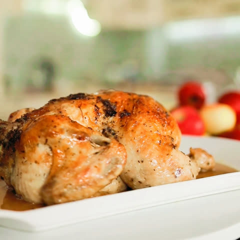
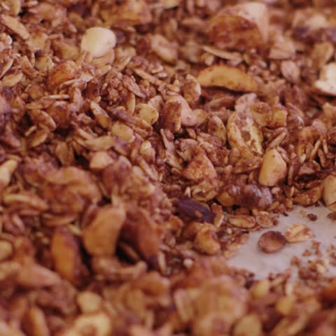
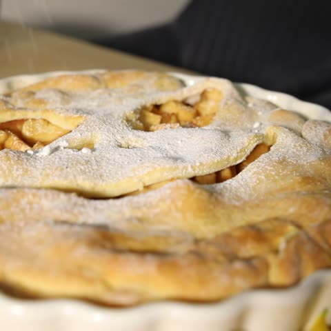
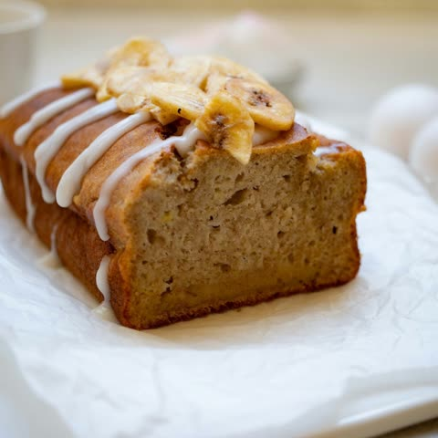

From the videos
Recipes, written out in full
Every recipe from TasteKeep's videos, with grams, oven temperatures and the steps as we cook them. Open one, then save it to your iPhone in a tap.
From the videos
Every recipe from TasteKeep's videos, with grams, oven temperatures and the steps as we cook them. Open one, then save it to your iPhone in a tap.

Sunday roast chicken
Chocolate granola
Halloween apple pie
Grandma’s banana breadTasteKeep is a private recipe book for iPhone and iPad. Paste a link to any page here into Import, or tap Share and choose TasteKeep, and the recipe lands in your book with the photo, ingredients and steps.
Free on the App Store. No account, no subscription.